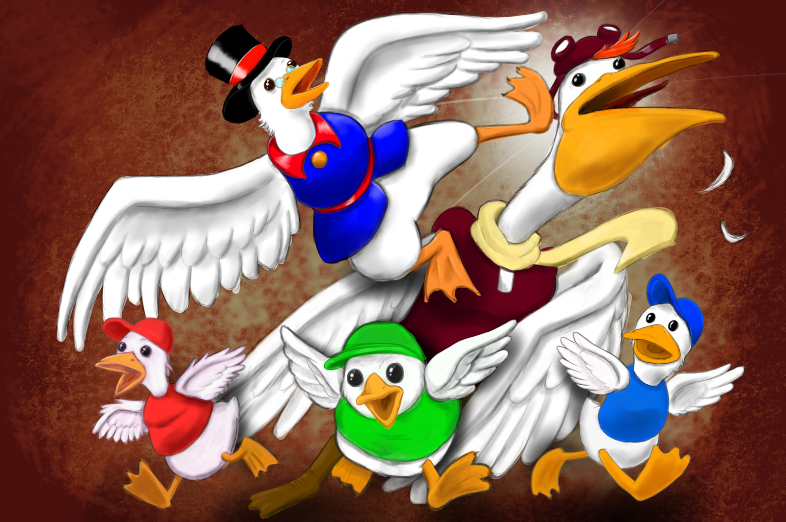

Updates:
December 26, 2024
I've been messing around with Blender's ClayPencil lately. I like how doodling in a 2D workflow can achieve a 3D stop-motion look without any additional modeling or rigging knowledge needed, so I took some time to make a small test animation. Since there's no rig involved, most of the anim is created by redrawing parts of the characters frame-by-frame in layers, or sculpting them into new poses. It's pretty fun, and this five-second anim took under a day to finish. I highly recommend watching the linked tutorial if anyone wants to have some fun trying out this kind of animation. For now, enjoy the epic battle between legendary treasure-hunters, Indiana Jones and Guybrush Threepwood.

December 1, 2024
I had a crazy last few days. My hosting provider (Canaca) went rogue on me and I nearly lost my site. I transferred everything at the last minute, thanks to Github and Mediafire, but I'll be running on storage fumes for a bit. All my games and downloads should still be available through MediaFire links for now. I'll update my hosting at a later time.
June 15, 2024
Just a few life updates:
The last few shows I made include Transformers: Earthspark S1, Monsters at Work S2, and Apple TV's Wondla. Those should all be out. Go give them a watch and leave some nice comments where applicable. The team loves sharing nice comments at work. Your appreciation gives us warm fuzzies.
My kids are 7 and 4 now. One of them likes coding games about bees and spinning pianos. The other likes soccer. Both like Roblox. There's been a LOT of Roblox in my life this year, and I've spent way too much time looking for Brookhaven's treasure (it's in the church roof).
I went down the "Phoenix Wright: Ace Attorney" rabbit hole this year for the first time. Three games in and there's no sign that I'll be surfacing any time soon.
I never took up boxing, but I did go scuba diving in Kauai and chased some sea turtles around. Whee!
My New Year's resolution is to commit to a Vitamin B12 diet and get rid of my darn headaches.
No, I have not made any new games or Ducktales cartoons. But I did draw this on my new PC.

July 1, 2023
Happy Canada Day... again! 
As promised, this website will update once a year with nothing to show. I'm still off social media, so this is my one outlet to let the global community know I'm still alive. Mission accomplished! Have a nice year.
Well, actually, since you're nice enough to be here, here's what I'm really up to: playing Nintendo Switch, taking piano lessons and as a surprise twist, possibly boxing and/or scuba diving. We'll see how the summer goes. And I'm still making cartoons. "Transformers: Earthspark" is on Paramount+ and "Monsters at Work" Season 2 was announced to be coming to Disney+ somewhere in 2023.
In the meantime, here's one of my kids either doing their best Marilyn Monroe impression or practicing for a future career in car dealerships. Enjoy! 

July 1, 2022
Happy Canada Day!
This month, I have a new music video to share! My long-time internet friend, Frederik Olsen (composer of VSB and Incinerations) invited me to make a music video for his band's new single and I was inspired enough to get off my butt and make the official video for Sort Mono's "Maneraket" (Danish for "Moon Rocket"). It's a little bit Radiohead, little bit Gorillaz-inspired, and all made with Blender's 2D Grease Pencil and a lot of Play-Doh, so give it a watch!
Also, some exciting news for my older games: Billy Voto sent me a special emulator that can used to play my oldest Klik-n-Play "Monkey Island" games. To my knowledge, these fan-games have been out-of-commission for over a decade, but this emulator makes them playable again! So thanks to Billy and I hope you all enjoy them!
April 22, 2022
Alive and still kicking! I did a short musical project with Frede earlier this year and I hope to share it here once it's released. It's one of the rare projects that really got my creative juices flowing during a very depressing past two years (which I still preferred over the anxiety of the four years prior).
I've re-released my choose-your-own-adventure "Lord of the Rings" fan-game. This new version, titled "All Paths Lead to Doom" includes an assortment of new story paths, spelling fixes and even more alternate endings. Give it a look-through and see where your Fellowship takes you!
And if you're curious my career side of things, here's a look at my 2021 Animation reel, featuring clips from "Monsters at Work" and "Elena of Avalor". I've also just finished on NBC's "Supernatural Academy" and I'm currently working on the new "Transformers: Earthspark" (coming Fall 2022 to Paramount+).
Anyway, most of our family's playtime has been largely centered around "Minecraft" and "The Sims" all winter, so I'll be getting back to building my dream Dinosaur Park. I'll update later when the other project is ready.
April 26, 2021
No COVID yet (2022 update: COVID came later.) Just waiting out the storm like the rest of you, and playing lots of video games with my son. I've got a new show coming out in June on Disney+, "Monsters at Work", where I did lead animation for the pilot episodes, so keep an eye out for that.
Hoping to get my vaccine soon, so until the next update, here's a screenshot of my son's "Slime Rancher" farm. We beat the whole game, so we're just putting lights and gordos everywhere now.

March 17, 2020:
My website conked out a while ago due to a weird, unrecoverable PHP thingie. This is the third time it's happened since I switched to Wordpress and, since my Geocities joke page was getting more traffic than my actual blog, I've switched back to a design more grounded in HTML for now. It's been really fun to build, actually. It feels like I've gone off-grid and built my own on-line log cabin, away from the noise of social media.
And yes, I'm still making things. I have games in development, and I'm working in children's television. You can see my work in Disney's "Elena of Avalor" and reruns of "Slugterra" and "Kate & Mim-Mim". With two kids to take care of, my gamedev keeps getting rescheduled, but I've found ways of making shorter games like "Starstruck" until I can afford time to my larger projects.
For now, I've rebuilt this website with all the bare essentials, including my fan-games and those duck cartoons. I won't be recovering my blog posts or people's loving comments because I just want to keep my site simple for now. If you want to reach out, please track me down through the Contacts page.
|